Katsuragishi, Nara: things to do, food and stays
Katsuragishi · Nara
Katsuragishi
Highlighted on the Nara map.
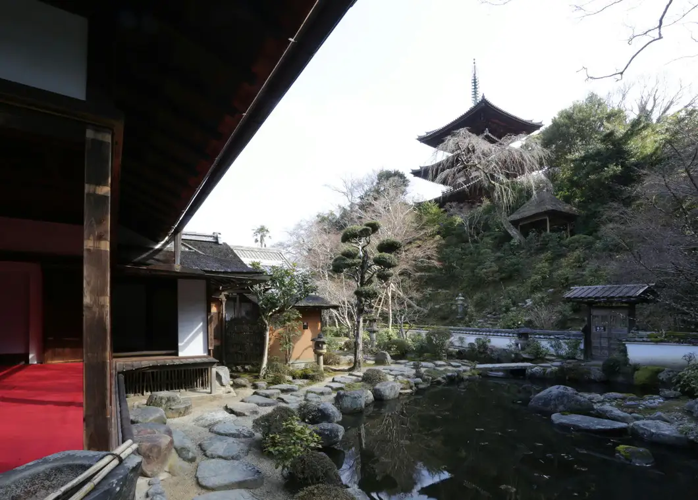
Stay
ＴＯＫＩＷＡ葛城／民泊
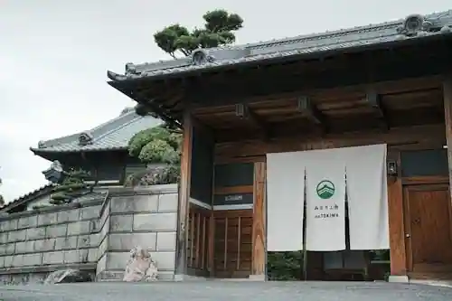
TOKIWA Katsuragi / Minpaku
Inn in Wakita, Katsuragishi with a sauna.
Dining
中将堂本舗
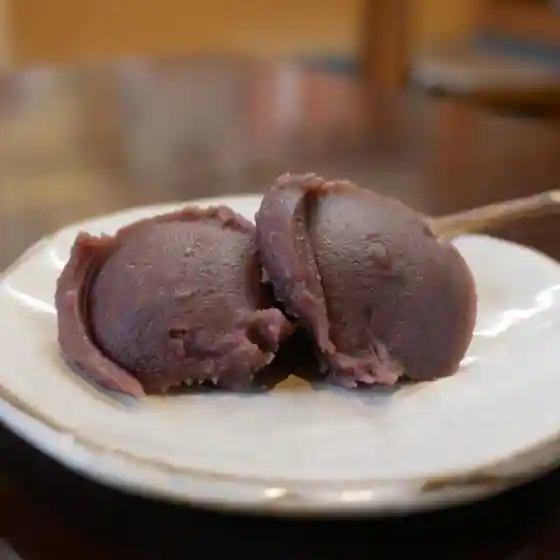
Chujo Domoto Ho
Lega
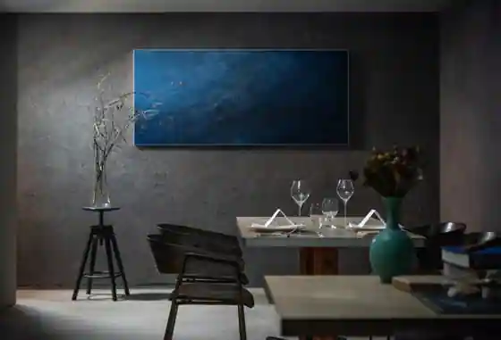
Lega
ねり天・瓦そば 味のかけ橋
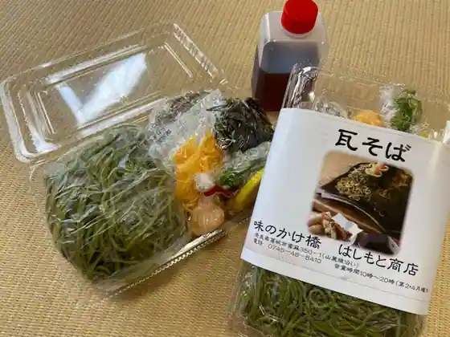
Neri Kawara Soba Aji Nokake Hashi
麺のようじ奈良
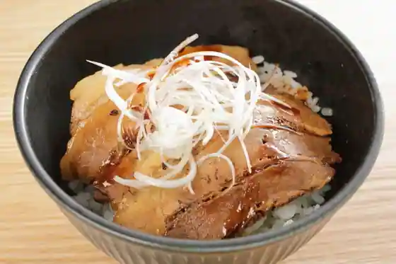
Men Noyoji Nara
ラッテ・たかまつ
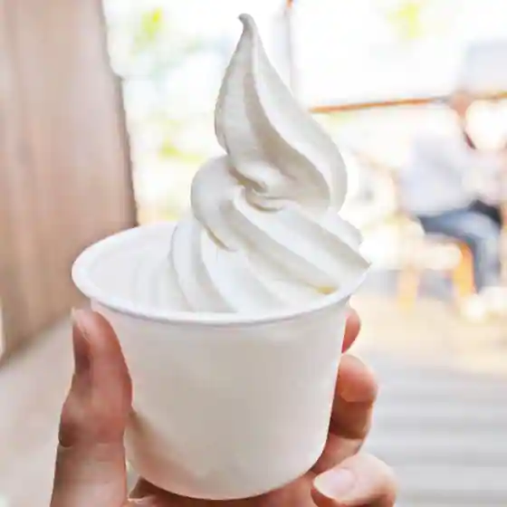
Ratte Takamatsu
脂醤油組 本店
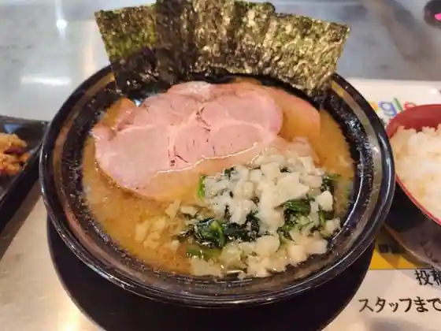
Abura Shoyu Kumi Hon
精肉屋の倅がただただ旨い肉を出す店 焼肉たけよし
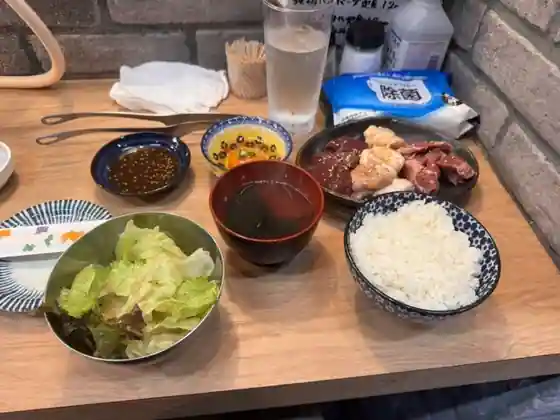
Seiniku Ya No Segare Ka Tata Tata Umai Niku Wo Dasu Yakiniku Takeyoshi
さぬきうどんのたぬき
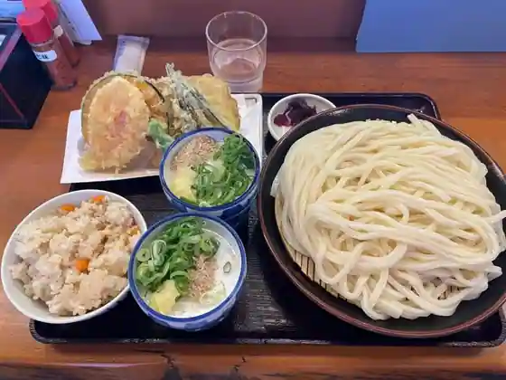
Sanukiudonnotanuki
薬庵
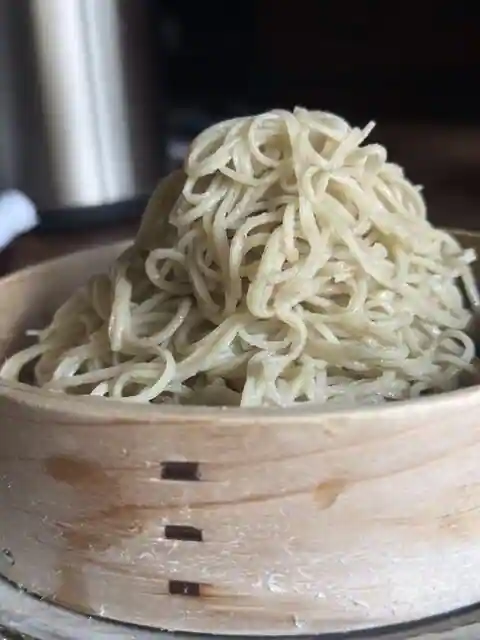
Kusuri Iori
葛城茶房 フォレストカフェ
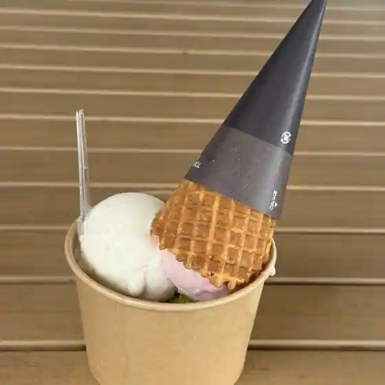
Katsuragi Sabo Foresuto Cafe
釜めし 玉や
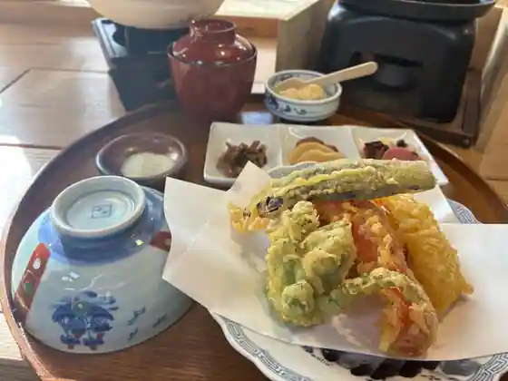
Kama Meshi Tama Ya
あすの澪 葛城店
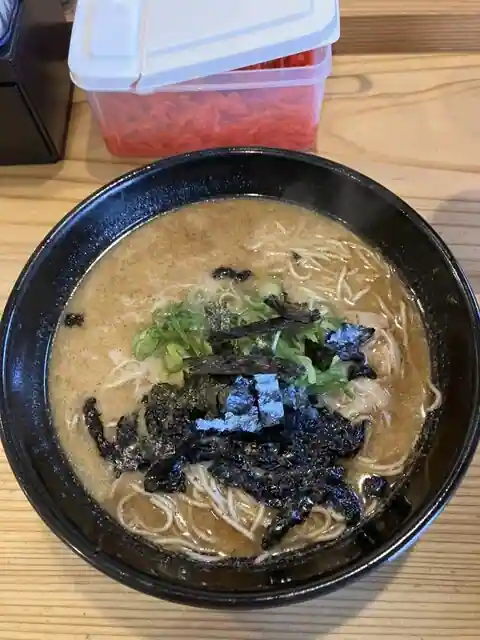
Asuno Mio Katsuragi
木伊
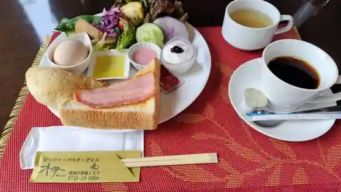
Ki I
春木春陽堂
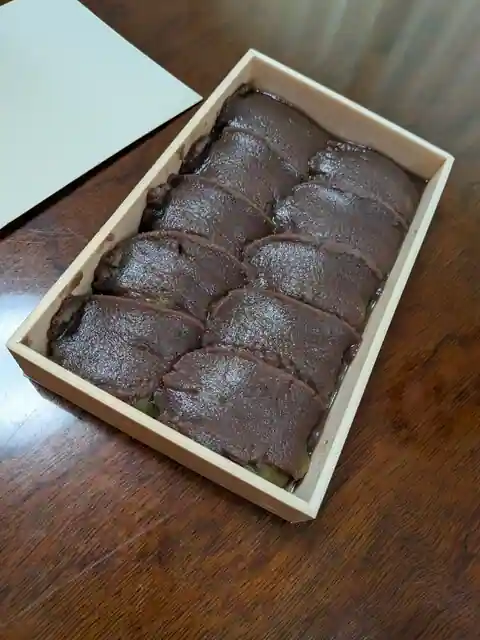
Haruki Shunyo Do
タイ料理ハウス ピサヌローク
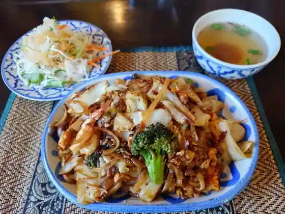
Tai Ryori House Pisanuroku
健康からだ食堂 道の駅かつらぎ店
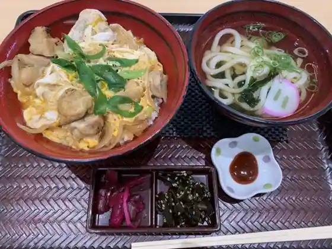
Kenko Karada Shokudo Michi No Eki Katsuragi
酪
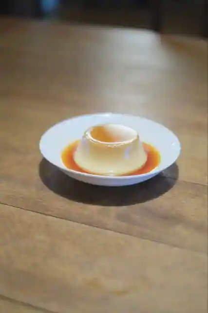
Raku
カントリーロード
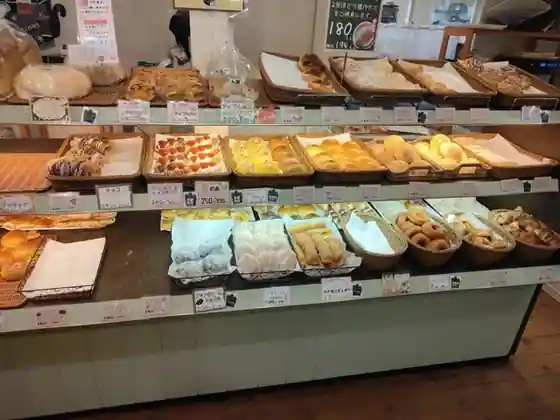
Kantorirodo
もんちっち3
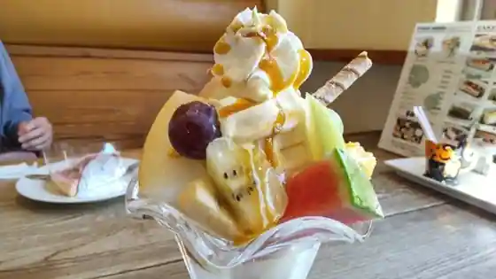
Monchitchi 3
一乃庵
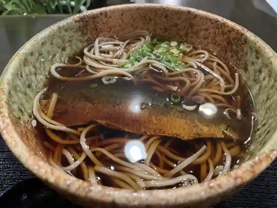
Ichi No Iori
道の駅 ふたかみパーク當麻
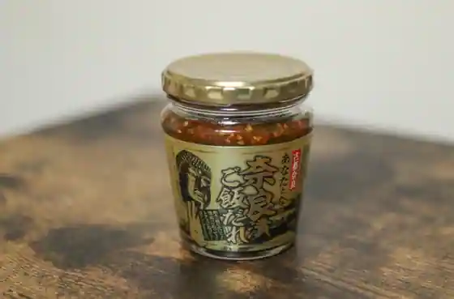
Michi No Eki Futakami Park Toma
梅乃宿酒造
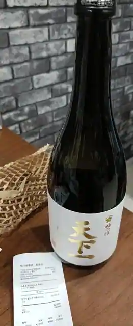
Umeno Yado Shuzo
M's 吉保
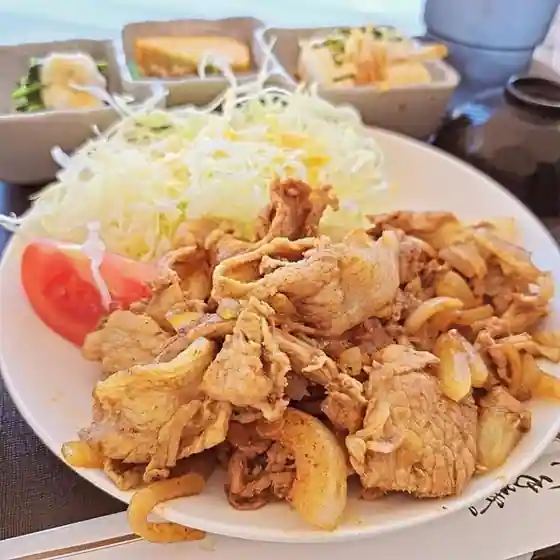
M's Yoshiyasu
かもん
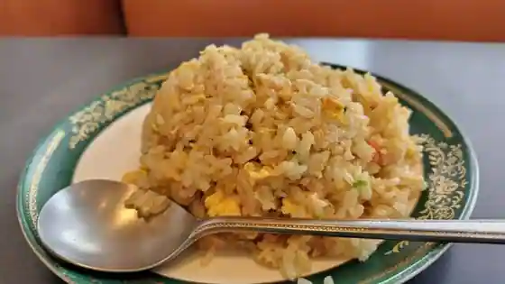
Kamon
Sights
Toma Jichu Yuki Bo
Toma Tera Oku In
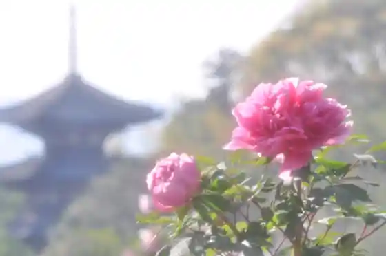
Toma Tera
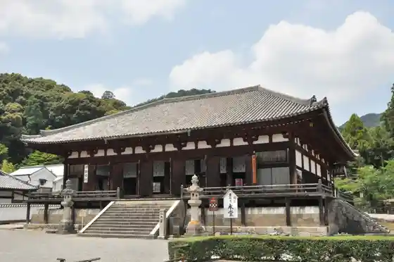
Futagami Yama
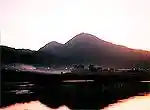
Ishimitsu Tera
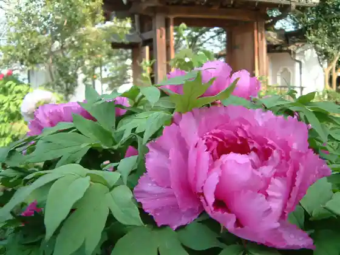
Toma Teranishi Nan'in
Katsuragishi Sumo Kan (Kehaya Za)
Roadside Station
Kazuraki Za Karai Shrine [ Usui Shrine ]
Katsuragishi Sanroku Park
Futagami Yama Furusato Park
Roadside Station Futakami Park Toma
Nagao Shrine (Katsuragishi)
Shiawase no Mori Park
Toma Tera Gonen In
Residence Yama Park
Katsuragishi History Museum
Tanabata Shrine
Toma Tera Shu Tane In
Toma Tera Oku In Takaramono Kan
Nogyo Kumiai Hojin Ratte Takamatsu
Toma Tera Sen Hotoke In
Sho Kuwa Shrine
Noji Kumiai Hojin Toma no Ie
Takeuchi Kaido
Kasa Do